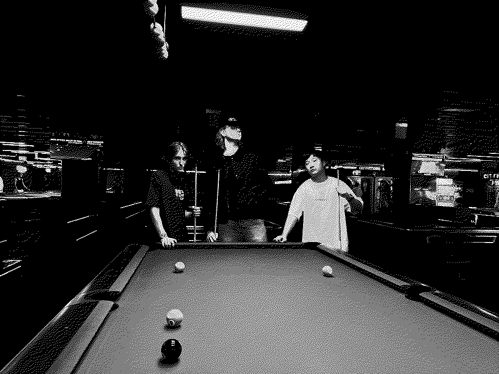

About Me
Hi, I'm Immanuel, a first year Bachelor of Cybersecurity student at UTS. Computers have been part of my life for a while, mostly through gaming at first, then I started actually wanting to understand how everything worked. That's pretty much how I ended up in cybersecurity.

What I'm Studying
In my first year at UTS I'm taking:
- Programming 1 (Java and Python)
- Network Fundamentals
- Web Systems
- Communication for IT Professionals
Interests
Outside of uni I spend time on:
- Astrophotography and photography
- Building and running a home lab (servers, networking, self-hosted services)
- Offensive cybersecurity and red team stuff
- Music, Big fan of metalcore
- Video editing in DaVinci Resolve
This Site
The site has four pages. Use the nav bar at the top to get around. The Past page covers my computing background, Future is about where I want to go with my career, and Comments goes through the design decisions I made when building this.